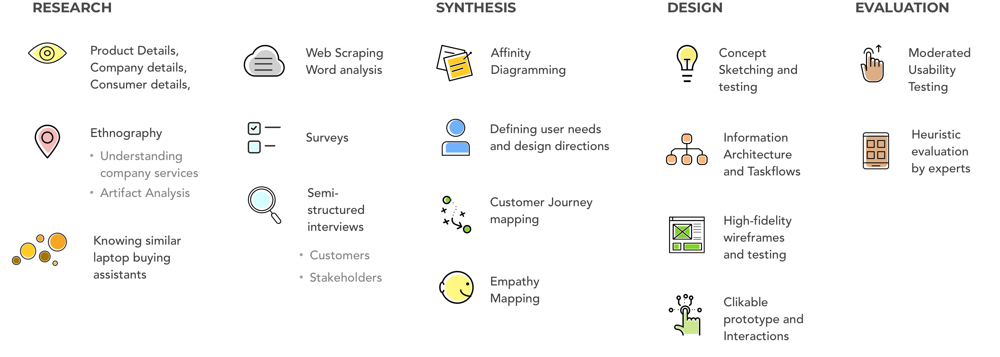
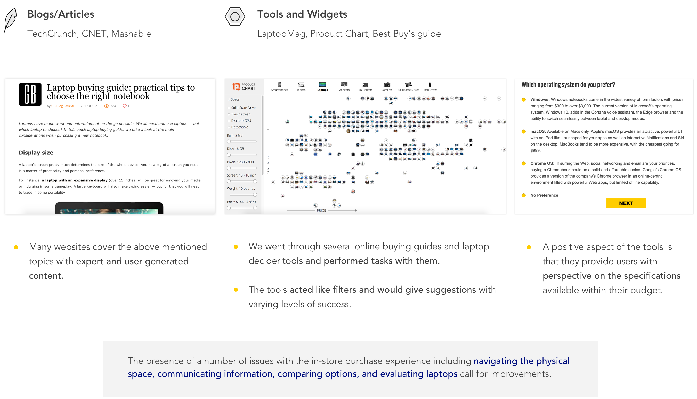
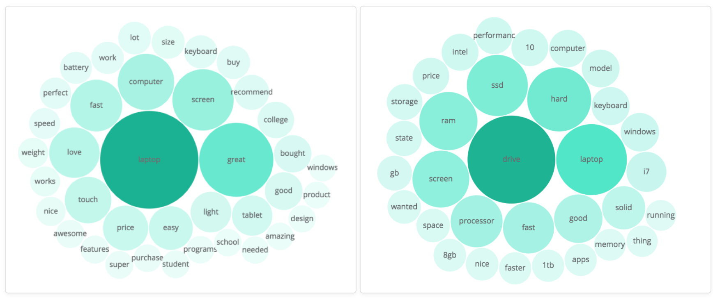
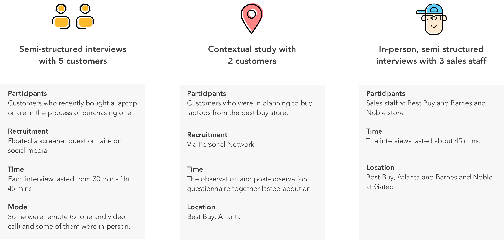
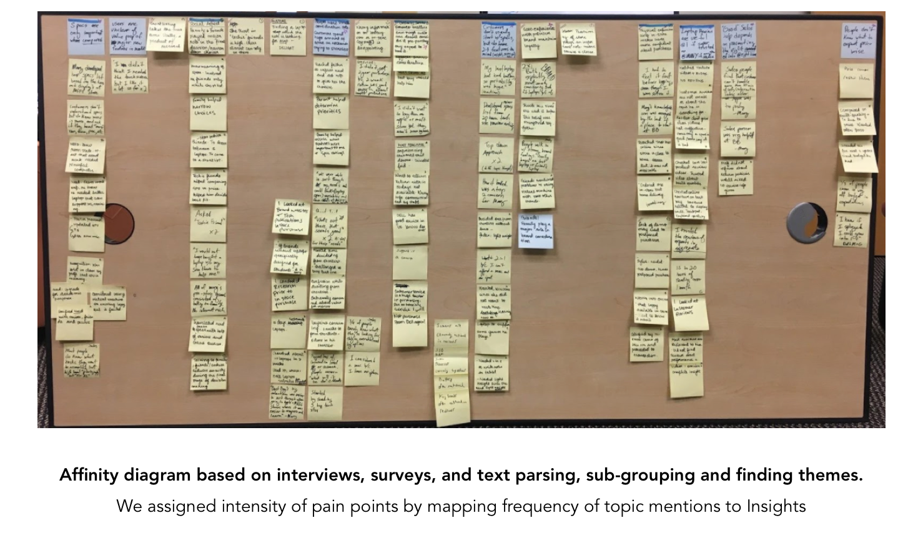
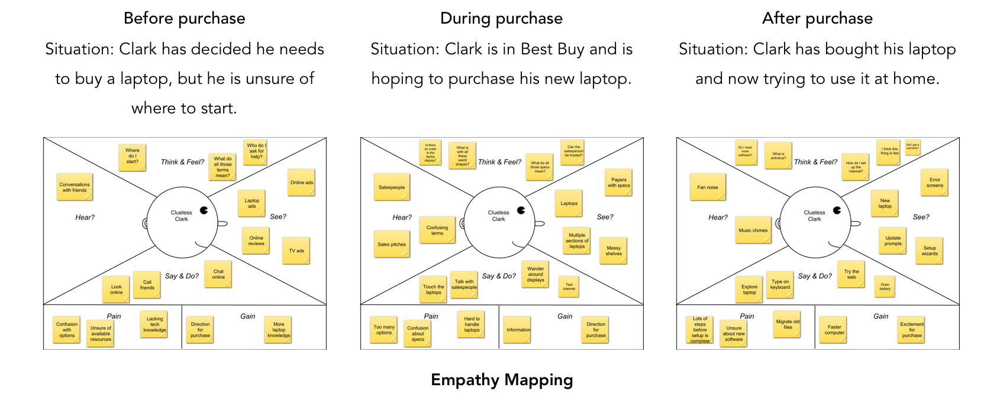

Best Buy: Improving the offline purchasing experience
This project was a part of my UX Research Methods class at Georgia Tech. The project was done in a group of 4. Members of my group: Kaylin Broussard, Jeremy Philipp, Jason Paul. We studied the offline laptop buying experience at Best Buy using User centered Research Methodologies, synthesized the collected data, presented design directions, wireframes and evaluated a solution.

- Instructor: Dr. Carrie Bruce
- Course: UX Research Methods
- Timeline: Sep 2017 - Nov 2017
- Methodology: User Centered Methodology
My Role: Shared research and usability testing tasks; Handled the information architecture, user flows, wireframing and prototyping.
THE PROBLEM
According to a study by Pew Research Center, 70% of the US adults own laptops. With increasing human needs, laptops have branched into several sizes, forms and types. For e.g. 2 in 1s, chromebooks etc. Today, there are a plethora of laptops that offer the same set of features and specifications: same microprocessors, RAM capacity, graphics cards, networking and wireless functionality. And with increasing number of devices available for personal computing, consumers today struggle to understand what PC fits their needs.
We aim to solve various problems customers face in their offline laptop purchase funnel. The team chose to focus to on one popular retailer, Best Buy , rather than particular laptop manufacturers. Interest to understand showrooming issues, personal antecedents, other retailers' AR/VR applications to supplement in-store purchasing lead to choosing the Best-buy in-store context.
The project started with studying laptops, their evolution, similar products, purchasing points/outlets, laptop consumers and about Best Buy. We studied Best Buy's consumer profiles.
Laptop Purchase Funnel
ETHNOGRAPHY
We visited the Best Buy in Atlanta to conduct in store observations of the environment, to observe customer interactions and sales team members. We did unstructured interviews with sales team members. This task revealed details specific to the context: problems in offline purchase, touchpoints, customer-salesperson interactions and general feelings about laptop purchasing. The three major findings are as below -
1) DIVISION OF LAPTOPS AND PLACEMENT AT BEST BUY
Laptops are divided according to price point.
Lower priced laptops are put in a less accessible area.
The laptop sections are divided by brand.
For example, Microsoft has its own table with all Surface laptops on a seperate table.
Laptops are divided by their form factor and function.
Chromebooks were put in a seperate section. Similarly, gaming laptops are in a seperate section.
2) SIGNAGE AT BEST BUY
Pricing and informational signage is very small throughout the store. Apple and Windows are the only sections which had specialized comparision displays. These displays compared products within the specified brand, but there were no in store tools to compare laptops between models and brands on your own.
Apple and Windows information tags
Helpful Signage which is not easily accessible since it is above eye level.
3) DEPENDENCY OF CUSTOMERS ON SALESTEAM
Customers heavily rely on the Sales team members in every phase of purchase. Sales team helps users discover their needs, help with basic questions about laptops, educate them about laptops, help them in making decisions and involve greatly in the checkout process.
BEST BUY ONLINE
Best Buy Online: We studied Best Buy's online services and performed a task analysis of its laptop buying assistant.
'Find your perfect laptop' tool
ARTIFACT ANALYSIS
We collected the customer reccomendation worksheet which the sales associate fills while talking to the customer. Analysing the worksheet helped us understand certain requirements that users need.

'Find your perfect laptop' tool
EXISTING PRODUCTS
There are a number of websites, blogs, vlogs, articles, and threads that aim to educate customers about current laptop industry trends, important buying criteria, top rated products, meaning of specs, and more. There are several laptop purchasing tools and widgets available online that dynamically involve users. The tools often work by first accepting user created criterion as input [mostly preferred specifications and features] and then giving back a list of laptops matching those inputs.

WEB SCRAPING AND WORD ANALYSIS
This method’s primary purpose was to find if there are any common topics of confusion or complaints that consumers list in their online laptop reviews. The secondary goal of using this method was to find commonly mentioned purchase research tools or resources.
Method: Topic Modelling
Based on those topics, we created themes that were common throughout the reviews. Additionally, commonly used words were noted along with those that were interestingly unique. All of those findings were compiled and used in the next stages of analysis.
Table displaying frequency of twenty five most commonly used words

Word clouds containing words that create the first and second largest computed topics.
SURVEYS
The main purpose of conducting a survey was to gather information about the tools and resources that consumers use while making a laptop purchase. We used e-mail, Facebook, Slack and Reddit for soliciting e-mail responses. The purpose of inviting participants using a variety of social media was to reach a range of consumers to gather a broad sample group. Takeaways were recorded and reviewed to look for broader themes and key data points.
Responses from our longer format survey were used to obtain a clearer picture of our “average user”. Many of the insights that were gathered from the survey were reiterated in more detail during the interviews.
USER INTERVIEWS
The goal was to understand how Best Buy in store customers go from thinking about buying a laptop to purchasing one, and how they felt during each part of the process.

ANALYSIS
The interviews were transcribed and we analyzed the observations through various methods.

